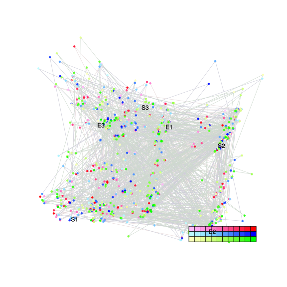
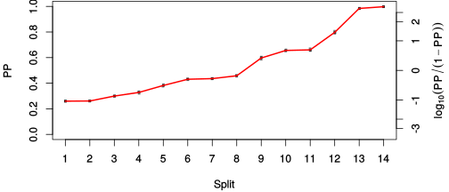
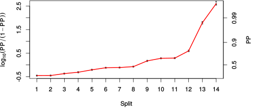

| chain # | burnin | subsample | Iterations (remaining) | command line | subdirectory | directory |
|---|---|---|---|---|---|---|
| 1 | 10000 | 1 | 90000 | bali-phy E7_AA_red3_BetaGamma_Lambda.fas -s 83455 -n BetaGamma_Lambda_c1 | BetaGamma_Lambda_c1-1 | /DATA/work/ONCOGENEVOL/database/trees/Bali-Phy/red3/E7 |
| 2 | 10000 | 1 | 90000 | bali-phy E7_AA_red3_BetaGamma_Lambda.fas -s 64593 -n BetaGamma_Lambda_c2 | BetaGamma_Lambda_c2-1 | /DATA/work/ONCOGENEVOL/database/trees/Bali-Phy/red3/E7 |
| 3 | 10000 | 1 | 90000 | bali-phy E7_AA_red3_BetaGamma_Lambda.fas -s 12548 -n BetaGamma_Lambda_c3 | BetaGamma_Lambda_c3-1 | /DATA/work/ONCOGENEVOL/database/trees/Bali-Phy/red3/E7 |
| P(data|M) = -2462.382 +- 0.241 | Complete sample: 4924 topologies | 95% Bayesian credible interval: 1982 topologies |
Phylogeny Distribution

| Partition support: Summary |
| Partition support graph: SVG |
{kind=link}
| 50% consensus | Newick (+PP) | SVG | |||||
| 66% consensus | Newick (+PP) | SVG | |||||
| 80% consensus | Newick (+PP) | SVG | |||||
| 90% consensus | Newick (+PP) | SVG | |||||
| 95% consensus | Newick (+PP) | SVG | |||||
| 99% consensus | Newick (+PP) | SVG | |||||
| 100% consensus | Newick (+PP) | SVG | |||||
| MAP | Newick (+PP) | SVG | |||||
| greedy | Newick (+PP) | SVG |
{kind=link}
{kind=link}
{kind=link}
{kind=link}
{kind=link}
{kind=link}
{kind=link}
{kind=link}
Alignment Distribution
Partition 1
| Diff | Min. %identity | # Sites | Constant | Informative | ||||
|---|---|---|---|---|---|---|---|---|
| Initial | FASTA | HTML | Diff | 4% | 105 | 1 (0.952%) | 97 (92.4%) | |
| Best (WPD) | FASTA | HTML | AU | 15.9% | 169 | 5 (2.96%) | 86 (50.9%) |
Mixing
{kind=link}
{kind=link}
| burnin (scalar) | ESS (scalar) | ESS (partition) | ASDSF | MSDSF | PSRF-CI80% | PSRF-RCF |
|---|---|---|---|---|---|---|
| 694 | 2613 | 3648.984 | 0.003 | 0.009 | 1.001 | 1.006 |
Projection of RF distances for the first 3 chains3D | Variation of split PPs across chains |
Scalar variables
| Statistic | Median | 95% BCI | ACT | ESS | burnin | PSRF-CI80% | PSRF-RCF |
|---|---|---|---|---|---|---|---|
| prior | -257.8 | (-305.4, -217.3) | 65.42 | 4127 | 419 | 0.9994 | 0.9978 |
| prior_A1 | -263.8 | (-309, -226.1) | 56.38 | 4789 | 301 | 1.001 | 1 |
| likelihood | -2436 | (-2462, -2412) | 19.6 | 13778 | 158 | 0.9996 | 0.9994 |
| logp | -2695 | (-2733, -2661) | 60.65 | 4451 | 539 | 1 | 1.002 |
| Heat.beta | 1 | ||||||
| Scale1 | 6.399 | (3.72, 10.15) | 1.084 | 248986 | 160 | 1 | 0.9995 |
| S1.F.pi.A | 0.05776 | (0.04122, 0.07557) | 8.402 | 32134 | 290 | 1 | 0.9907 |
| S1.F.pi.R | 0.07475 | (0.05343, 0.09776) | 12.29 | 21972 | 694 | 1 | 1.002 |
| S1.F.pi.N | 0.03621 | (0.02297, 0.05075) | 11.2 | 24102 | 511 | 0.9999 | 0.9982 |
| S1.F.pi.D | 0.04959 | (0.03455, 0.06619) | 8.686 | 31084 | 450 | 0.9996 | 0.9957 |
| S1.F.pi.C | 0.03865 | (0.02205, 0.05803) | 7.82 | 34527 | 275 | 1 | 0.9967 |
| S1.F.pi.Q | 0.05405 | (0.03942, 0.06963) | 8.278 | 32617 | 312 | 1 | 1.002 |
| S1.F.pi.E | 0.08017 | (0.05854, 0.1028) | 9.396 | 28734 | 236 | 0.9998 | 1.003 |
| S1.F.pi.G | 0.06857 | (0.0464, 0.09359) | 8.294 | 32555 | 177 | 1 | 0.9949 |
| S1.F.pi.H | 0.02569 | (0.01465, 0.03877) | 8.379 | 32224 | 600 | 1 | 0.9998 |
| S1.F.pi.I | 0.04081 | (0.02693, 0.05612) | 8.498 | 31773 | 166 | 0.9998 | 1 |
| S1.F.pi.L | 0.1117 | (0.08575, 0.1382) | 8.56 | 31541 | 271 | 0.9999 | 0.9976 |
| S1.F.pi.K | 0.02713 | (0.01647, 0.03915) | 8.301 | 32527 | 317 | 1 | 1.006 |
| S1.F.pi.M | 0.005321 | (0.001456, 0.01079) | 8.254 | 32711 | 296 | 1 | 0.9934 |
| S1.F.pi.F | 0.03395 | (0.01968, 0.05038) | 9.399 | 28726 | 405 | 0.9999 | 0.994 |
| S1.F.pi.P | 0.06032 | (0.03964, 0.08326) | 10.04 | 26881 | 420 | 1 | 0.9952 |
| S1.F.pi.S | 0.08232 | (0.06267, 0.1033) | 8.512 | 31718 | 294 | 1 | 1.002 |
| S1.F.pi.T | 0.04924 | (0.03406, 0.06579) | 8.155 | 33107 | 360 | 1 | 1.006 |
| S1.F.pi.W | 0.001423 | (2.533e-09, 0.006212) | 12.85 | 21010 | 611 | 0.9996 | 1.002 |
| S1.F.pi.Y | 0.02021 | (0.009602, 0.03302) | 8.22 | 32845 | 524 | 1 | 0.9996 |
| S1.F.pi.V | 0.07276 | (0.0548, 0.09223) | 7.778 | 34713 | 412 | 0.9999 | 0.9996 |
| I1.RS07.meanIndelLengthMinus1 | 1.524 | (0.8188, 2.438) | 25.11 | 10754 | 364 | 1 | 0.9991 |
| I1.RS07.logLambda | -3.713 | (-4.113, -3.297) | 16.24 | 16628 | 208 | 1 | 1.001 |
| |A1| | 155 | (144, 164) | 103.3 | 2613 | 590 | 0.9512 | 1.002 |
| #indels1 | 37 | (30, 45) | 64.79 | 4167 | 235 | 0.9 | 1.002 |
| |indels1| | 93 | (74, 108) | 18.68 | 14450 | 299 | 0.95 | 0.9961 |
| #substs1 | 470 | (457, 483) | 28.03 | 9631 | 312 | 0.9412 | 0.9985 |
| Scale1*|T| | 7.923 | (7.034, 8.887) | 4.324 | 62438 | 202 | 0.9999 | 0.9982 |
| |A| | 155 | (144, 164) | 103.3 | 2613 | 590 | 0.9512 | 1.002 |
| #indels | 37 | (30, 45) | 64.79 | 4167 | 235 | 0.9 | 1.002 |
| |indels| | 93 | (74, 108) | 18.68 | 14450 | 299 | 0.95 | 0.9961 |
| #substs | 470 | (457, 483) | 28.03 | 9631 | 312 | 0.9412 | 0.9985 |
| |T| | 1.24 | (0.6999, 1.895) | 1.006 | 268303 | 68 | 1 | 0.9989 |